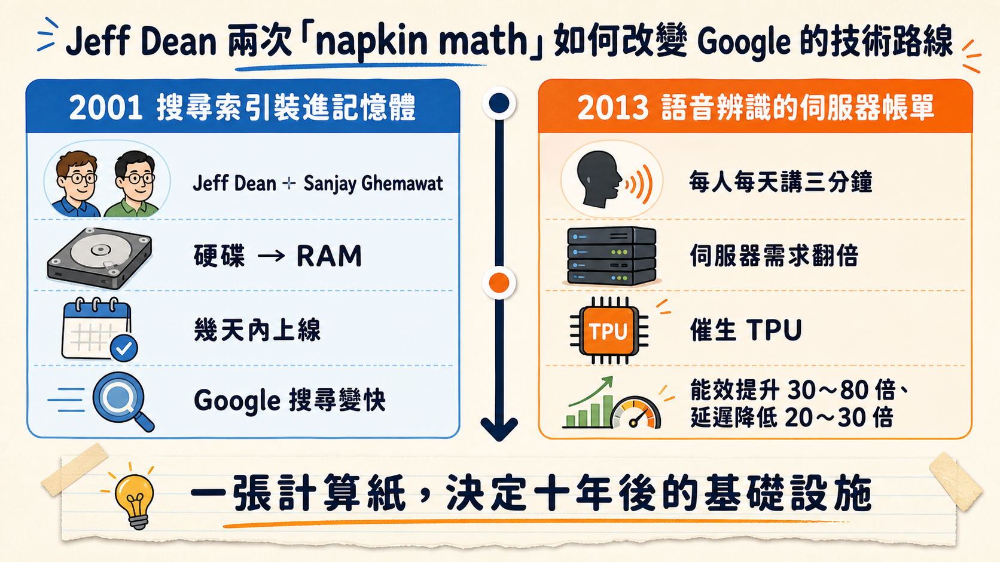
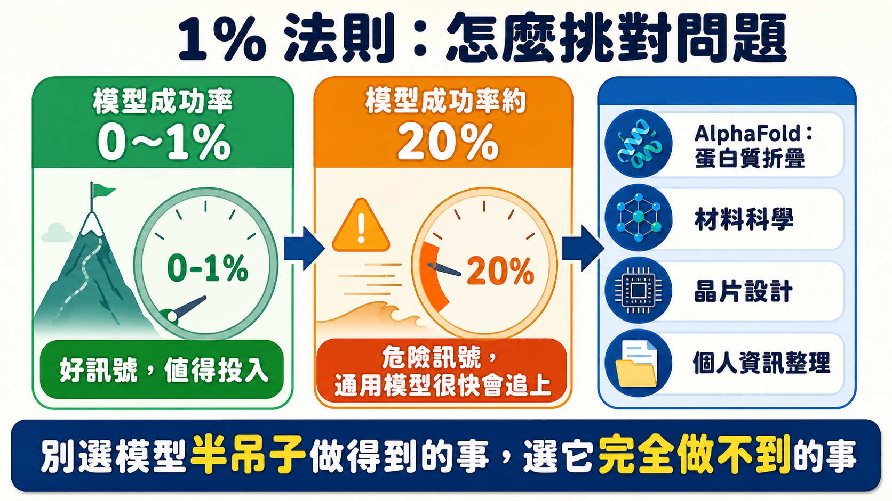

一個問題，兩個時代
2001 年，Google 搜尋還跑在硬碟上。Jeff Dean 和 Sanjay Ghemawat 算了一筆帳：整個搜尋索引，終究會小到能塞進所有機器加起來的記憶體裡。這個念頭一冒出來，兩人只花了幾天就把整套系統從硬碟搬進 RAM，產品直接從「能用」變成「秒回」——後來大家熟悉的 Google 搜尋速度，起點就是這張計算紙上的算式。
十二年後，故事重演了一次，但賭注換成了公司要不要花錢自證清白。2013 年，語音辨識剛開始在 Google 內部跑出漂亮的準確率，Jeff Dean 又拿起了計算機：如果每個 Google 使用者每天用語音功能講三分鐘話，伺服器需求會直接翻倍。翻倍意味著什麼，任何一個管過機房預算的人都懂——那是一筆極其昂貴的帳單，而且還只是為了做語音辨識這一件事。這筆帳算出來的答案很直接：與其省那筆伺服器預算，不如重新設計一顆晶片。三年後，那顆晶片變成了 TPU，能效比當時的 CPU 高出 30 到 80 倍，延遲低了 20 到 30 倍。而發明 TPU 的時候，連 Transformer 架構都還沒被寫出來——Dean 團隊當年賭的，是「未來的機器學習一定需要大量低精度線性代數運算」這個更底層的判斷，賭贏了才有後來的一切。

2026 年，YC Startup School 的舞台上，YC 的 Diana Hu 把這兩個故事攤開在 Jeff Dean 面前，問了一個所有想做 AI 新創的人都該問自己的問題：此刻，誰在做那道「記憶體終將裝得下整個索引」等級的心算？
講者背景：一場剛發生的離職，把這場對談的份量又推高了一截
這場對話發生時，Jeff Dean 的身分是 Google 首席科學家（Chief Scientist）——這個職位他從 Google AI 負責人一路做到 Google DeepMind 首席科學家，經手過 MapReduce、Bigtable、TensorFlow、TPU、Gemini，是少數同時定義過 Google 基礎設施與 AI 模型兩個時代的工程師。
但這場訪談公開後不到一週，情況起了變化。2026 年 8 月 5 日，Google 對外證實 Dean 將在任職 27 年後離開公司，與 Sanjay Ghemawat（Google Senior Fellow）、Oriol Vinyals（DeepMind 研究副總裁）、Quoc Le（Google Brain 共同創辦人）一起創辦新創公司 Discovery Loop，目標是把科學與工程實驗的流程自動化——而 Alphabet 本身則以創始投資人與雲端合作夥伴的身分參與。同一波人事異動裡，Demis Hassabis 也卸下 DeepMind 執行長的日常職務，轉任董事長與 Alphabet 首席科學家，由 Koray Kavukcuoglu 接手 DeepMind 的營運。
這個時間點值得停下來想一下。訪談裡 Dean 花了大篇幅談「AI 系統要能自己跑實驗、自己改進自己」「2027 年會看到更多 ML 系統的自動化」，聽起來像是對產業趨勢的預測。但四天之後，他自己就用實際行動回答了那個關於「25 歲的 Jeff Dean 現在會怎麼選」的假設題：離開能調動全球最多算力的地方，帶著三個老同事去做一家小公司才會做的事，把「自動化實驗迴圈」這件事本身，做成一家公司的核心產品。訪談裡他說的每一句關於「兩三個人在一個房間裡還能贏」的判斷，現在看起來更像是他寫給自己的行動綱領，而不只是說給台下聽眾的建議。
junior engineer 這個預測，兌現到什麼程度
去年 5 月的 AI Ascent 大會上，Dean 說過一句話：AI 已經到了「初階工程師」的水準。一年過去，Diana Hu 追問這個預測兌現了多少。Dean 的回答很誠實：代理型（agent-based）的長任務編碼能力，成長速度比他預期的快，而且不只在寫程式這件事上——在其他領域，這類系統也開始展現能力。他低估的地方在於「複雜任務的處理能力成長速度」，而不是能力本身存不存在。
被追問 2027 年的版本會是什麼樣子，他給出的答案是：機器學習系統會開始大量自動化——把問題拆成子問題、放進一個緊湊的自動實驗迴圈裡跑，再把結果拼回一個改進過的系統。這句話單獨聽像是技術路線圖，但放進他後來離職創業的脈絡裡讀，會發現這其實是 Discovery Loop 這家公司的產品雛型描述。他在台上講的，其實就是自己正準備要蓋的東西。
「延遲數字表」該改版了：AI 時代的新常識清單
Dean 早年寫過一份工程師圈子裡近乎聖經的清單，叫「每個工程師都該知道的延遲數字」——快取失誤要多久、硬碟尋軌要多久、一個網路封包從加州飄到荷蘭要多久。那張表教會一整代分散式系統工程師怎麼估算成本。Diana Hu 問：2026 年版的這張表該長什麼樣？
Dean 給出的清單換了一套單位：加速器主記憶體到晶片內記憶體的頻寬、做一次乘法運算要耗多少能量、晶片之間的互連頻寬能撐住多少張晶片同時運算、當你要串連一萬張晶片而不是五百張時，頻寬會怎麼掉。這些數字聽起來很硬核，但它們回答的其實是同一個問題：當你的產品從「處理請求」變成「等待模型回應」，使用者體驗的瓶頸就從程式碼邏輯，搬到了物理層——資料要移動多遠、要花多少能量。
但低延遲場景恰恰不能批次，因為使用者不會等你湊夠一批人再回覆。很多新創把自己的效能問題歸咎於「模型不夠聰明」，但 Dean 點破的是：很多時候那其實是資料搬運的問題，而不是模型的問題——你換一個更聰明的模型，那一千倍的落差還是在那裡等你。
Context Engineering：模型之外的那件事，才是每個人都能做的事
過去的 AI 進展，是更多資料、更大參數量。但這幾年，重心逐漸移到模型之外的東西——檢索、記憶、工具呼叫，慢慢被統稱為 context engineering。這個轉向，剛好對上這幾年業界慢慢有共識的一個講法：Agent 真正的能力，是模型加上它周邊那整套工具、記憶、評估機制（也就是所謂的「harness」）一起決定的。訓練一個模型要海量的 GPU 和資料，不是誰都做得到；但幫一個既有模型組裝一套好的檢索系統、寫一套好的工具呼叫規則，只要一支 API 金鑰就夠了。
context engineering 好用的地方，在於它送進模型的資訊「乾淨且明確」，不像訓練資料是幾兆個 token 攪和在一起的「湯」。Dean 舉了一個他自己動手做的例子：他和 Sanjay Ghemawat 幾週前在優化 Google 內部一個微基準測試庫的效能。過去的流程是：量測目前效能、修改程式碼、重新跑基準測試、看哪裡進步、再量測快取足跡——整個循環靠人手動跑。他們把這整套流程寫成一份「技能」（skill）交給模型，模型就能自己完成「量測、改進、再量測」的迭代循環。這不是訓練了新模型，只是把人做事的方法，翻譯成模型看得懂的格式而已。
Google 內部確實已經把這套做法用在真實工程流程上：寫給 Agent 用的技能，涵蓋程式碼審查、效能量測、抓 log 檔——不需要模型天生就懂 Google 內部的專屬系統，只要技能定義寫得夠精準，模型照樣能把事情做對。
Agent 為什麼撐不過第 30 步
幾乎每個做過 Agent 的人都碰過同一個現象：前面十步表現很好，走到第三、四十步就開始亂來。Dean 對這個現象的解釋，回到了機器學習最基本的性質——模型是在一整套訓練分布上學出來的，一旦任務偏離它熟悉的分布，表現就會像所有機器學習模型一樣「突然掉下去」，而且離舒適區越遠掉得越兇。
他給出的解法有兩條路。第一條是给模型技能和提示，讓它盡量留在「照得到燈光的那條路」上——也就是它訓練分布內熟悉的路徑。第二條更有意思：用多代理系統，讓多個 Agent 同時嘗試不同做法，再用另一個模型或 Agent 去評估哪一條路看起來最有希望，保留有希望的、丟掉走偏的——本質上是用推論時的算力，去搜尋可能的解法空間，而不是賭一次成功。這聽起來像是把「試錯」這個人類最原始的學習方式，重新編碼成一套可以並行、可以自動篩選的搜尋演算法。
兩三個人的房間，還能贏 Google 什麼
這一段是整場對話裡對創業者最直接的建議。Dean 先承認一個事實：Google 的 Gemini 和整套硬體基礎設施，目標就是打造能做「幾乎任何事」的通用模型。但正因為通用，注意力必然分散——某些特定領域，一個設計精良的介面加上一組技能，或一個沒被塞進通用模型大雜燴裡的專用模型，反而能做出讓人驚豔、準確率極高的東西。
他挑選問題的判準很具體，也很反直覺：去測試現有的通用模型在你想做的問題上表現如何——如果模型完全做不到，那是個好訊號；如果模型能做到一部分但做得不太好，那反而不是好訊號，因為這通常代表能力已經在模型裡萌芽，再多一點訓練資料或再大一點的模型規模，很快就會被通用模型追上。他要創業者找的，是模型成功率是 0% 或 1% 的問題，不是 20%。這句話之所以值得記住，是因為它把「該做什麼」這種模糊的直覺問題，變成了一個可以實測、有明確判準的篩選器。

具體的例子，他提到了 AlphaFold：一個極度專精的蛋白質折疊模型，不是通用模型，但在自己的領域裡做到了近乎完美。材料科學、晶片設計，都是同樣形狀的問題——你能拿到某個通用模型拿不到的特定資料，或者這個問題小到不需要太多算力就能訓出一個高度精準的專用模型。而另一條路，他半開玩笑地指出：「organizing the world's information」這件事 Google 已經做得很完整了，但「organizing your own personal information」，這個市場還是開放的——同樣一句話，換了主詞，難度和機會都完全不同。
稀缺的技能，不是寫程式，是判斷力
如果每個創辦人都能同時管理上百個 Agent，程式碼全部交給 Agent 寫，那什麼會變得稀缺？Dean 的答案毫不猶豫：是判斷「該讓 Agent 去做什麼」的品味（taste）。他把這件事拉回自己做研究的經驗——研究者可以擁有所有工具和技巧，但多數時候真正決定成敗的，是「你把時間花在哪個問題上」。選對問題、解決它，遠比優雅地執行一個乏味問題的研究來得有價值。模型不太可能學會這種高層次的判斷，所以人要負責的，反而從「怎麼做」上移到了「決定做什麼」。
品味怎麼練？他給了三條路。第一條最樸素：經驗——做過越多不同的問題，越懂什麼問題未來可能重要，什麼東西差一步就能拼湊出來。第二條更可操作：寫下你覺得接下來 12 個月會重要的一串猜測，挑一個去做，但十二個月後回頭檢視那份清單，看看哪些猜測應驗了、哪些沒有——這個動作本身，就是在替自己的判斷力做校準。第三條是主動去做「瘋狂的思想實驗」，不把大家視為理所當然的假設當真。
一個五十年沒人敢動的假設
Dean 分享了他和同事最近在做的一個思想實驗，拿它當「質疑假設」的示範。晶片產業六十年來的默契是：同一設計的每一顆晶片都該一模一樣，不能有位元翻轉——記憶體有 ECC 糾錯機制，整個產業把「零錯誤」當成起點。但在更大的尺度上，分散式系統從來不做這個假設：單顆硬碟會壞，但資料本身要安全，所以資料放三份、放在三個不同機架上，任何一個環節壞了都不影響整體。
思想實驗是反過來問：如果故意用一種每天會出兩萬次錯的電晶體去蓋系統，而不是追求百萬年一次錯誤的可靠度，會發生什麼事？訊號的傳遞方式會完全不同——你可能得靠多條冗餘路徑同時送出同一個訊號，確保至少一條能到。Diana Hu 立刻聽出這像是在講神經科學：人腦裡神經訊號從一處傳到另一處，本來就不特別可靠，重要的資訊靠的是多條路徑同時傳送。Dean 沒說「我們該去做這個」，他只說這種思想實驗大多數時候不會成功——過去五十年這樣做是有很好的理由的——但偶爾回頭質疑一次，值得做。
MapReduce 的誕生，其實就是同一種思考習慣的產物。當年 Google 的爬蟲與索引系統裡，寫了大量手工平行化、帶大量檢查點（checkpoint）的程式碼，確保跑在成百上千台機器上、部分機器掛掉也沒事——但這些容錯邏輯，把原本很單純的邏輯（把所有網頁的內容抓出來，算出「這個網址對應哪種語言」這種簡單的映射）給埋掉了。Dean 和 Ghemawat 想起自己念函數式語言的背景，發現可以把問題抽象成一層在上、容錯機制放在下層的函式庫，上層的人不用再處理底層的可靠性問題——這套抽象後來成了 Google 處理大規模運算最重要的基礎設施之一。
讓 AI 建造更好的 AI
Dean 目前手上的兩個具體專案，一個是 AlphaChip（自動化晶片佈局），一個是 AlphaEvolve（提出解法、評估、保留有效的那些）。他把這兩者放進一個更大的框架裡描述：科學方法的核心本來就是提出實驗、執行實驗、評估結果——現在越來越多問題可以把這整個迴圈自動化，而且把迴圈的延遲壓到極低。這件事不只適用於機器學習本身，材料科學、晶片設計等各種能被自動化實驗迴圈覆蓋的領域，都能被加速。
他舉了一個十年前的案例當佐證：量子化學裡，要理解一個分子的性質，得跑一整晚的密度泛函理論模擬。他的同事拿模擬跑出來的大量輸入輸出資料，訓練了一個神經網路去逼近模擬器本身——結果是準確率幾乎不打折，但速度快了 30 萬倍。原本要花六個月東拼西湊算力才能篩完的一千萬種分子組合，現在吃頓午飯的時間就能跑完。真正被改寫的，是「做科學」這件事的節奏本身：評估（evaluation）這個環節一旦變快，整條實驗迴圈能轉多快就直接決定了一個領域能被推進多遠。
而機器學習模型自己改進自己，他認為技術上已經沒有真正的障礙——現在大型研究團隊改進模型的方式，是人想點子、跑小規模實驗、篩出有效的、放大規模驗證、再把結果整合進下一版的模型。這整條鏈路，沒有理由不能自動化，由模型自己決定要探索什麼方向，或許只需要人在最高層級偶爾給一點提示。
一篇被拒的論文，和留下來的教訓
2014 年，Dean 和 Geoffrey Hinton、Oriol Vinyals 寫了一篇關於「蒸餾」（distillation）的論文——用一個大型教師模型去訓練一個更小、更便宜的模型。這個技巧現在整個產業都在用，但論文當年被 NeurIPS 拒絕了，理由是「不太可能有重大影響」。
Dean 談起這件事時沒有怪審稿人——一篇論文通常只有三位審稿人，其中一位可能沒有大規模 AI 服務的實務經驗，單純從「這是不是一個根本性突破」的角度去評判它，自然容易低估它的價值。他們把論文放上 arXiv，後來的事大家都知道了：蒸餾技術現在被直接用在 Gemini 的 Flash 系列模型上，讓小尺寸模型在對應的效能量級裡達到頂尖表現。那句「不太可能有重大影響」，現在讀起來像是整個產業最反諷的一句審稿意見。
找工作與找人：兩條建議都很直白
被問到「如果把 25 歲的自己傳送到今天，你會加入前沿實驗室，還是自己開公司」，Dean 沒有給標準答案，只給了篩選問題的方法：你是不是真心在乎這個問題？如果和一群你喜歡共事的人一起把它做出來，世界會不會因此變得更好一點？如果答案是「這樣做出來也就還好吧」，那就不值得花時間。大公司有結構、有能提供你不懂的知識的同事、有現成的影響力平台；小團隊風險更高，但成敗都算自己的，而且往往更值得。
找人的建議同樣具體：找技能互補的人，但更重要的是找「你樂於長時間共處」的人——因為你們會一起在很難的問題裡耗上很長時間，低自我（low ego）、願意當團隊玩家的人，合作起來才走得遠。他把工程師或研究者的職涯，比喻成一條不斷往上加新工具的工具帶：你永遠不知道下一個問題需要哪四種特定工具，而不是你現有的那三種——工具帶越滿，未來能被你解決的問題就越多。
留給下一個人的問題清單
訪談收尾前，Diana Hu 問 Dean：如果這個房間裡有人日後做出和 MapReduce、TPU、蒸餾同等份量的東西，你希望他們在解決什麼問題？Dean 列了幾個他自己也還沒有答案的方向：更高效的推論硬體；能比今天的方法更省資料的機器學習演算法——他提到一個尖銳的對比，今天的大型模型看過的資料量，大概是一個 18 歲人類的一千倍，但一個 18 歲的人在很多事情上表現得不比那些看過海量資料的前沿模型差，這中間的落差本身就是一個懸而未決的問題；持續學習（continual learning），讓系統能從自己的行動裡不斷學習；多代理互動；甚至是讓人與人之間有更文明的對話、幫世界各地志趣相投的人彼此找到對方。
他自己補了一句：這份清單不完整，世界很大，問題很多。四天後，他自己選了清單裡的一項——把科學發現的實驗迴圈自動化——親自下場去做。這場對談留下的，與其說是一份預言，不如說是一份他寫給自己的待辦清單。